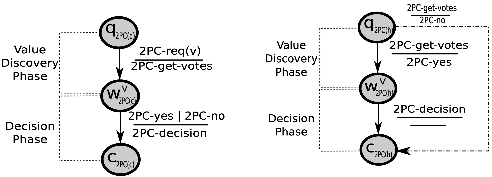
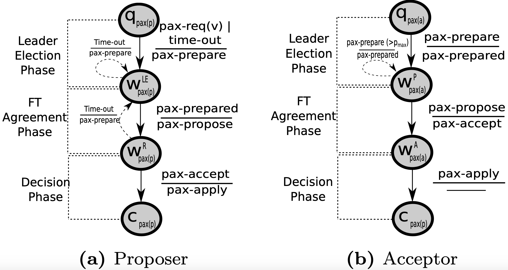
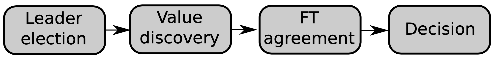
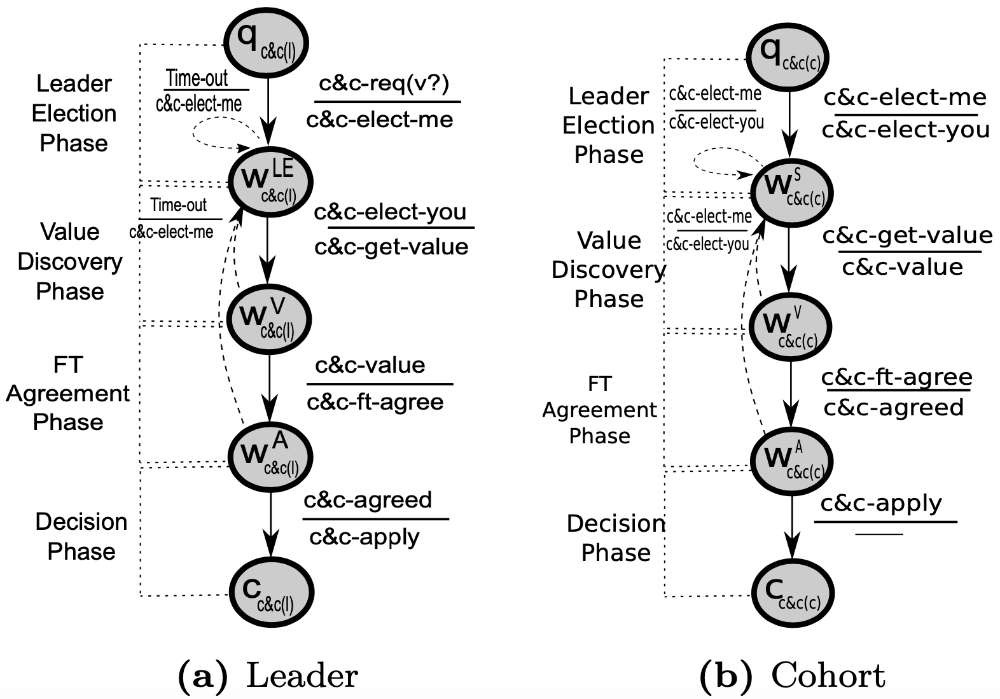
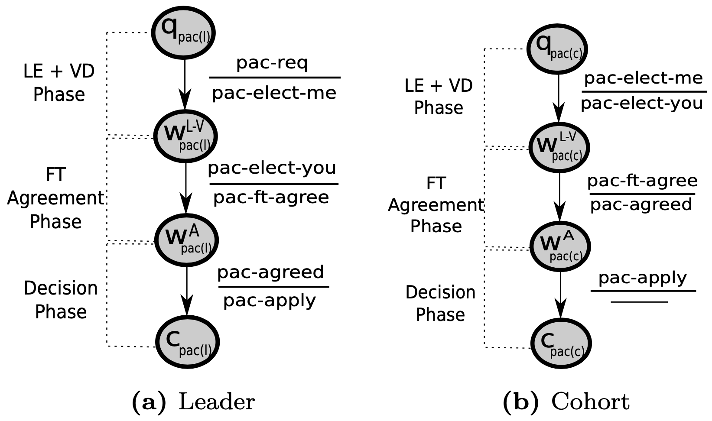

Unifying Consensus and Atomic Commitment for Effective Cloud Data Management
~~~~~~~~~~~~~~~
In this post, I would be going over the paper Unify Consensus and Atomic Commitment for Effective Cloud Data Management by Maiyya et al. This paper is part of VLDB Endowment and coincidently, I was attending the session in which authors presented this work. In this paper, authors attempt at presenting a single framework that encompasses both consensus and commit protocols. They try to illustrate the similarity in the underlying state-diagrams and show how a generalized model can explain both the protocols.
Objectives of this Post. Exploring the proposed single model for consensus and atomic commit protocols.
Expectations from the Reader. Basic understanding of database concurrency-control schemes.
Why a unified model?
~~~~~~~~~~~~~~~
Consensus and Commit protocols are prevalent in distributed and database applications. These protocols aim at helping nodes (or servers) reach a common decision even in the presence of failures. Authors claim that a single unified model can help in achieving a intuitive framework, which explains a large set of existing commit and consensus protocols. Such a framework can also highlight the distinction between different types of protocols. Moreover, this framework can be employed to design newer efficient protocols.
Two-Phase Commit Protocol
~~~~~~~~~~~~~~~
The two-phase Commit (2PC) protocol is used to achieve atomic commitment in partitioned databases. Partitioned databases are akin to shardedsystems where each partition includes a subset of data items. Any incoming client transaction could require access to one or more partitions. If the transaction requires access to multiple partitions, then it is termed as a distributed transaction.
To ensure a common order for all the transactions (distributed or otherwise), these systems employ a concurrency control (CC) protocol such as two-phase locking (2PL), timestamped, MVCC and so on. In case of distributed transactions, coordination is required between multiple partitions as each partition could have independently decided to commit or abort the transaction. Existing works employ a commit protocol to achieve coordination among the partitions.

Two-Phase Commit Protocol
Jim Gray proposed the Two-phase Commit to achieve coordination among the partitions. We use the diagram from the paper to explain how 2PC works as later it will help to achieve a generalized framework. 2PC protocol is run in a coordinator-cohort setting where coordinator starts the protocol and cohorts respond to the coordinator. When the request is completed at all the partitions (2PC-req(v)), the coordinator sends a 2PC-get-votes message to all the cohorts. Each cohort on receiving this message sends its vote, 2PC-yes (commit) or 2PC-no(abort) to the coordinator. When coordinator receives votes from all the partitions, it makes a decision and sends the message 2PC-decision to all the cohorts. This decision is to abort the transaction if at least one partition votes to abort, otherwise it is a commit.
Prior works have shown that 2PC is a blocking protocol, that is, partitions are unable to make progress in case coordinator or cohorts failures. Hence, there are several non-blocking protocols such as Three-phase commit, EasyCommit, and so on.
Paxos Consensus Protocol
~~~~~~~~~~~~~~~
Paxos is used to achieve fault-tolerant consensus in replicated systems. The key issue with the commit protocols is that the coordinator requires votes from all the participants. Further, these commit protocols are unable to handle message delays and loss. Hence, Lamport (Paxos), and Oki and Liskov (Viewstamped Replication) independently, presented the Paxos consensus protocol. Paxos works in a replicated setting where there are a set of servers and each server is replica of every other server.

Paxos Consensus Protocol
Paxos follows the primary-backup model where one replica acts as the leader (proposer) and other replicas act as the backup (acceptor). It is also possible to same or distinct set of replicas performing the tasks of both proposer and acceptors. In the figure above, authors use the Paxos design where there can be multiple competing proposers. Note that such a design may not terminate.
When a proposer receives a request v from a client, it sends a pax-prepare message to all the acceptors. This proposal includes a proposal number (k)greater than the largest known proposal (pmax) to this proposer. When an acceptor receives this message, it checks if k > pmax. If this is the case, then it responds with a pax-prepared message. When a proposer receives pax-prepared messages from a majority of the acceptors, then it sends a pax-propose message to all the acceptors. Each acceptor receives a pax-propose message that has a k ≥ pmax, then it responds with a pax-accept message. When a proposer receives pax-accept messages from a majority of the acceptors, then it sends a pax-apply message to all the acceptors. When an acceptor receives a pax-apply message with the chosen value, it commits (or executes) the request.

High-level sequence of tasks generalized from Paxos and 2PC
Abstracting Paxos and 2PC
~~~~~~~~~~~~~~~
Authors note that both Paxos and 2PC share some similarities.

C&C Framework
C&C Framework
~~~~~~~~~~~~~~~
The C&C framework tries to capture the similarities between the consensus and commit protocols in a single design. The leader and cohorts perform the following steps in this framework. A client sends a C&C-req(v?) to the leader. In case of commit protocols, this request is an indication of transaction termination. The leader would initiate the leader election phase by selecting a number k and sending C&C-elect-me message to all the cohorts. Each acceptor checks if k > pmax. If this is the case, the acceptor replies with C&C-elect-you message. This message can also include any previously accepted value. Once a leader receives messages from a majority of acceptors, it starts Value Discovery phase. If the C&C-elect-you message includes any value, then leader selects that value. Otherwise, akin to 2PC, it sends C&C-get-value to all cohorts and waits for C&C-value from all cohorts. The leader now initiates the FT-Agreement phase, sends a C&C-ft-agree to each cohort and waits for C&C-ft-agreed from a majority of the cohorts. The leader finally propagates the decision by sending C&C-apply messages to all the cohorts.

Paxos Atomic Commitment Protocol
Sharding-Only in the Cloud (Paxos Atomic Commitment)
~~~~~~~~~~~~~~~
Now authors consider the case of traditional partitioned databases where there is no replication. They use the C&C framework to reach their Paxos Atomic Commitment (PAC), which is similar to E3PC protocol. PAC aims to achieve fault-tolerance in this sharded environment.
In PAC, the leader election and value discovery phases are merged together. As a result, the leader needs responses from all the cohorts (in initial round) and from a majority in subsequent election. Further, PAC assumes a single leader (no competition). The flow of the phases in this protocol is quite similar to what we discussed above. The key distinction is use of a set of variables: InitValue, AcceptNum, AcceptVal and Decision. The use of these variables helps to recover state in case of leader failures.
Each cohort responds to the leader's pac-elect-me message with some value for the variables InitValue, AcceptNum, AcceptVal and Decision. If Decision variable is set to True, this implies previous leader failed after sending decision to at least one replica and without sending pac-apply messages. If none of the replicas have Decision variable set to True but some replica has Accept variable set to Commit, this implies leader was able to reach the Commit decision prior to failing. If none of these variables are set, then it corresponds to a Value Discovery phase and the leader waits for all the cohorts to reply and selects a value for AcceptValue based on the InitValue received from the cohorts (like votes in 2PC).